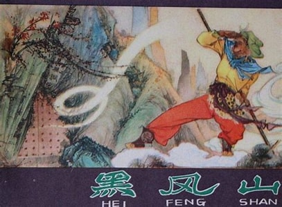

黑风山故事
原著出处
- 第十六回：观音院僧谋宝贝 黑风山怪窃袈裟
- 第十七回：孙行者大闹黑风山 观世音收服熊罴怪
- 第二十六回：孙悟空三岛求方 观世音甘泉活树
故事梗概
唐僧师徒路过黑风山，在观音院借宿。黑风怪趁夜偷走袈裟，孙悟空追至黑风洞，与黑风怪展开激战。后来观世音菩萨出面，收服黑风怪为座下守山大神。这段故事展现了佛门中人的贪婪本性，也暗示了黑风怪与观音院之间的复杂关系。
影视对应
- 1986版《西游记》第9、10集：黑风山
- 2011版《西游记》第5、6集：黑风洞
唐僧师徒路过黑风山，在观音院借宿。黑风怪趁夜偷走袈裟，孙悟空追至黑风洞，与黑风怪展开激战。后来观世音菩萨出面，收服黑风怪为座下守山大神。这段故事展现了佛门中人的贪婪本性，也暗示了黑风怪与观音院之间的复杂关系。
观音院的和尚为贪图唐僧袈裟，暗中勾结黑风怪。这段故事展现了佛门中人的贪婪本性，也暗示了黑风怪与观音院之间的复杂���系。和尚们表面恭敬，实则暗藏祸心，最终导致了一系列事件的发生。

讲述了起死回生之法的来历，以及观世音菩萨如何用甘露水救活枯死的松树。这个故事展现了佛法的神奇力量，也暗示了生命的可贵。同时也体现了孙悟空为了救人不惜跋山涉水的精神。